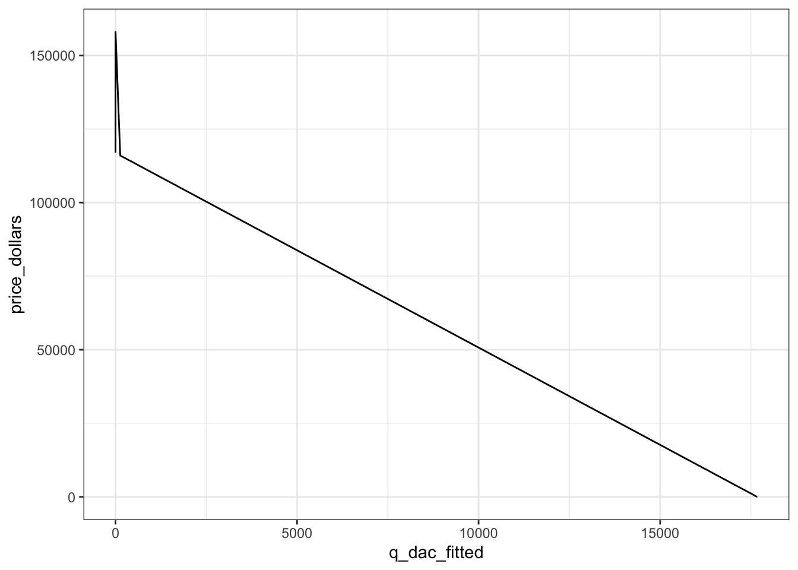
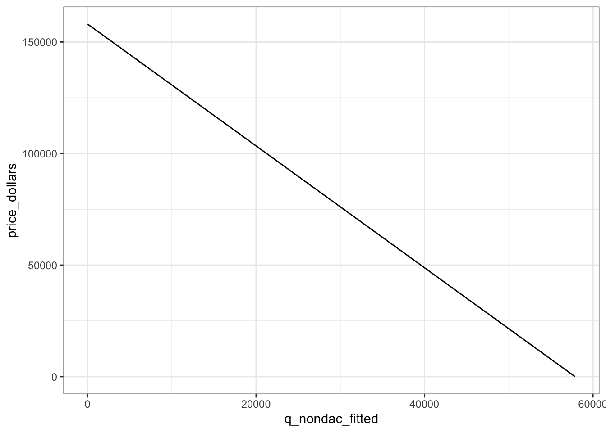
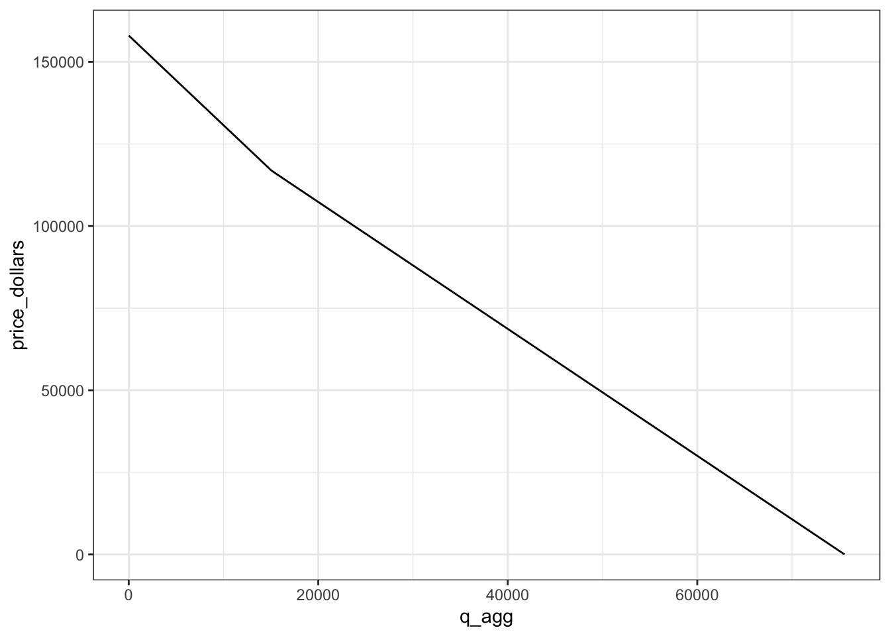
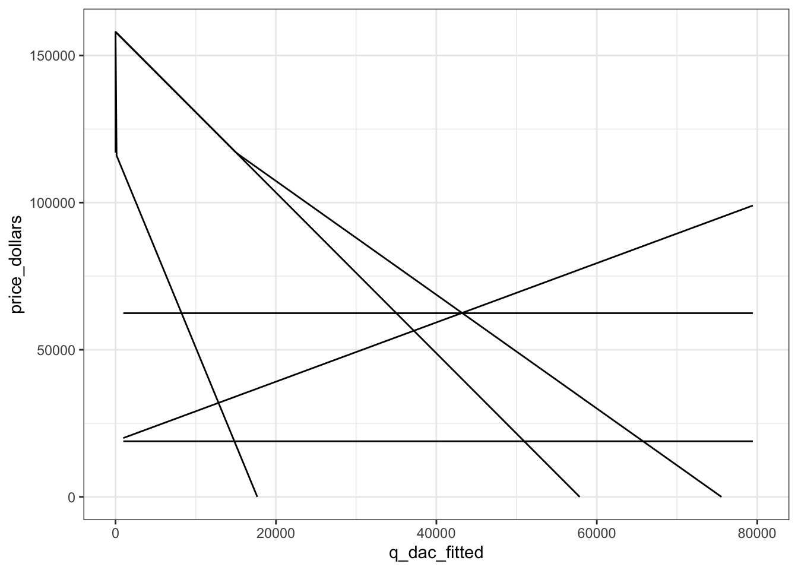

a3_dobbs_villanueva
Assignment 3
1.
Code
Call:
lm(formula = price_dollars ~ q_dac, data = ev_dac_data)
Residuals:
Min 1Q Median 3Q Max
-20741.2 -5993.1 -64.3 7111.5 24463.5
Coefficients:
Estimate Std. Error t value Pr(>|t|)
(Intercept) 116854.836 4917.886 23.761 1.76e-14 ***
q_dac -6.611 0.671 -9.853 1.92e-08 ***
---
Signif. codes: 0 '***' 0.001 '**' 0.01 '*' 0.05 '.' 0.1 ' ' 1
Residual standard error: 11180 on 17 degrees of freedom
Multiple R-squared: 0.851, Adjusted R-squared: 0.8422
F-statistic: 97.08 on 1 and 17 DF, p-value: 1.923e-08
Call:
lm(formula = price_dollars ~ q_non_dac, data = ev_dac_data)
Residuals:
Min 1Q Median 3Q Max
-14091.5 -6287.5 520.5 6614.2 12853.9
Coefficients:
Estimate Std. Error t value Pr(>|t|)
(Intercept) 1.580e+05 6.128e+03 25.79 4.53e-15 ***
q_non_dac -2.731e+00 1.932e-01 -14.13 7.92e-11 ***
---
Signif. codes: 0 '***' 0.001 '**' 0.01 '*' 0.05 '.' 0.1 ' ' 1
Residual standard error: 8110 on 17 degrees of freedom
Multiple R-squared: 0.9216, Adjusted R-squared: 0.917
F-statistic: 199.8 on 1 and 17 DF, p-value: 7.921e-11\[\begin{aligned} \\ &D_{DAC} = -6.611*Q_{EVs} + 116855 \\ &D_{nonDAC} = -2.731*Q_{EVs} + 158034 \\ \\ \end{aligned}\]
These differences in demand could be a result of a willingness to pay to avoid transportation pollution by
- nonDACs have higher marginal benefit across all quantities than DACs (higher intercept and shallower slope)
2.
\[\begin{aligned} \\ &MEC_{EV} = 18900 \\ \\ \end{aligned}\]
3.
Code
dac_demand_fn <- function(Q){
P = (demand_dac$coefficients[2,1] * Q) + demand_dac$coefficients[1,1]
return(P)
}
dac_demand_fn_q_from_p <- function(P){
Q = ((1/demand_dac$coefficients[2,1]) * P) + (demand_dac$coefficients[1,1]/(-demand_dac$coefficients[2,1]))
return(Q)
}
nondac_demand_fn <- function(Q){
P = (demand_nondac$coefficients[2,1] * Q) + demand_nondac$coefficients[1,1]
return(P)
}
nondac_demand_fn_q_from_p <- function(P){
Q = ((1/demand_nondac$coefficients[2,1]) * P) + (demand_nondac$coefficients[1,1]/(-demand_nondac$coefficients[2,1]))
return(Q)
}Code
# new agg demand attempt
ev_agg_demand <- data.frame(price_dollars = seq(from = 0, to = 165000, by = 1000))
ev_agg_demand <- ev_agg_demand %>%
mutate(q_dac_fitted = ifelse(dac_demand_fn_q_from_p(price_dollars)>0, dac_demand_fn_q_from_p(price_dollars), 0)) %>% # fit dac regression results, but only for values greater than 0
mutate(q_nondac_fitted = ifelse(nondac_demand_fn_q_from_p(price_dollars)>0, nondac_demand_fn_q_from_p(price_dollars), 0)) %>% # fit nondac regression results, but only for values greater than 0
mutate(q_agg = q_dac_fitted + q_nondac_fitted) %>% # calc aggregate demand values
subset(q_agg > 0) # filter out 0 values
ggplot(data = ev_agg_demand, aes(x = q_dac_fitted, y = price_dollars)) +
geom_line() +
theme_bw()
Code


Making an aggregate demand function
We will make an aggregate demand function with two different line equations that are evaluated depending on whether Q is before or beyond the kink in the aggregate demand curve. The first line equation from (0, Q_kink) is simply D_nondac, though we must solve for the equation from Q_kink onward. We can do this with algebra, which involves first finding the Q of D_nondac at the equilibrium price, which gives us Q_kink. We then can solve for the horizontal sum below the y-intercept of D_dac, i.e. changing the y-intercept of D_nondac to equal the y-intercept of D_dac and horizontally summing (call this P’agg). From here, we can shift this curve by Q_kink, by taking P’agg(Q-Q_kink) to get the portion of the aggregate demand curve we will evaluate beyond Q_kink.
Code
q_kink = nondac_demand_fn_q_from_p(demand_dac$coefficients[1,1])
slope_agg = (demand_dac$coefficients[2,1]*demand_nondac$coefficients[2,1])/(demand_dac$coefficients[2,1] + demand_nondac$coefficients[2,1])
d_agg_beyond_kink_fn <- function(Q){
price = (demand_dac$coefficients[1,1] - (slope_agg * q_kink)) +
(slope_agg * Q)
return(price)
}
agg_demand_fn <- function(Q){
if (Q < q_kink) {
price = nondac_demand_fn(Q)
}
if (Q >= q_kink) {
price = d_agg_beyond_kink_fn(Q)
}
return(price)
}Code
[1] 49671.57For consumer surplus, we take the sum of the integral from [0, Q_kink] and the integral [Q_kink, Q*], minus P*xQ*.
Code
[1] 2474912870[1] 12417892184.
[1] 10112Code
[1] 338017962[1] 39559.57Code
[1] 21368949085.
Optimal tax is equal to the MEC(Q*), and since MEC = 18900 as a constant, the optimal tax will be $18900 per EV.
(a)
(b)
(c)
(d)
(e)
Code
ggplot() +
geom_line(data = ev_agg_demand, aes(x = q_dac_fitted, y = price_dollars)) +
geom_line(data = ev_agg_demand, aes(x = q_nondac_fitted, y = price_dollars)) +
geom_line(data = ev_agg_demand, aes(x = q_agg, y = price_dollars)) +
geom_line(data = ev_agg_demand_tax, aes(x = q_msc_supply, y = price_dollars)) +
geom_line(data = ev_agg_demand_tax, aes(x = q_msc_supply, y = mec_per_ev)) +
geom_line(data = ev_agg_demand_tax, aes(x = q_msc_supply, y = p_star_tax)) +
xlim(0, 80000) +
theme_bw()Warning: Removed 79 rows containing missing values (`geom_line()`).
Removed 79 rows containing missing values (`geom_line()`).
Removed 79 rows containing missing values (`geom_line()`).
(f)
(g)
6.
(a), (b), (c)
Code
supply_variable_fn <- function(Q, tax){
P = supply_fn(Q) + tax
return(P)
}
demand_less_price_tax_fn <- function(Q){
Z = agg_demand_fn(Q) - supply_tax_fn(Q)
return(Z)
}
dac_pretax_q_percent = dac_q_star_no_int / q_star_no_int
nondac_pretax_q_percent = nondac_q_star_no_int / q_star_no_int
welfare_stats <- function(battery_damage) {
opt_tax = battery_damage * 63
welfare_df <- data.frame()
supply_variable_fn <- function(Q){
P = supply_fn(Q) + opt_tax
return(P)
}
demand_less_price_variable_fn <- function(Q){
Z = agg_demand_fn(Q) - supply_variable_fn(Q)
return(Z)
}
q_star_variable = fzero(fun = function(x) demand_less_price_variable_fn(x), c(0,100000))$x
p_star_variable = agg_demand_fn(q_star_variable)
ev_agg_demand_variable <- ev_agg_demand %>%
mutate(q_msc_supply = ((q_star_variable/(p_star_variable - opt_tax)*price_dollars) - opt_tax))
q_nondac_demand_variable = nondac_demand_fn_q_from_p(p_star_variable)
q_dac_demand_variable = dac_demand_fn_q_from_p(p_star_variable)
nondac_cs_variable = pracma::integral(fun = function(x) nondac_demand_fn(x), xmin = 0, xmax = q_nondac_demand_variable) - (q_nondac_demand_variable*p_star_variable)
dac_cs_variable = pracma::integral(fun = function(x) dac_demand_fn(x), xmin = 0, xmax = q_dac_demand_variable) - (q_dac_demand_variable*p_star_variable + opt_tax*q_star_variable)
ps_variable = (q_star_variable*(p_star_variable - opt_tax)) / 2
### add the revenue redistribution to each group
tax_revenue_variable = opt_tax * q_star_variable
dac_cs_variable = dac_cs_variable + (dac_pretax_q_percent * tax_revenue_variable)
nondac_cs_variable = nondac_cs_variable + (nondac_pretax_q_percent * tax_revenue_variable)
### produce output dataframe
welfare_df <- rbind(welfare_df, data.frame(damage_level = battery_damage,
q_eq = q_star_variable,
p_eq = p_star_variable,
nondac_cs = nondac_cs_variable,
dac_cs = dac_cs_variable,
ps = ps_variable))
return(welfare_df)
}Code
| Battery Damage per EV | Non-DAC CS | DAC CS | PS |
|---|---|---|---|
| 350 | 2342374119 | -533239625 | 895018275 |
| 400 | 2356502793 | -633600598 | 850104146 |
| 450 | 2366825092 | -727935473 | 806346161 |
| 500 | 2373341015 | -816244249 | 763744320 |
Within the table above, we see the welfare of DAC and non-DAC consumers as well as producers at the varying levels of environmental damage per kg of lithium in an EV battery. DAC welfare is negative, and all of non-DAC, DAC, and producer welfare decreases as the damage level increases despite redistribution of tax revenue to consumers.